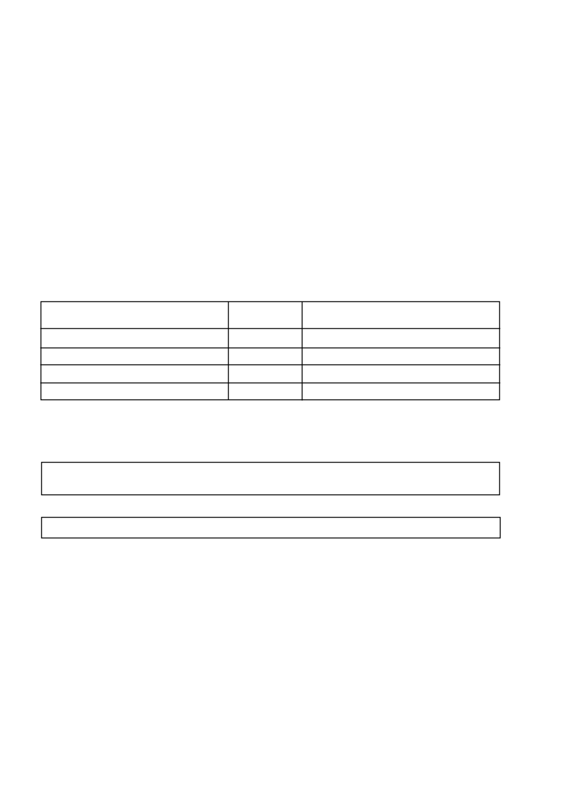

GESAPRIM 90 WG
/ 4
BELANGRIK
•
Brandmerke mag soms op die blare van mielies en graan-
sorghum wat met
GESAPRIM 90 WG
plus CAMPATOP
®
225
EC tenkmengsel gespuit is, voorkom. Die plant ontgroei dit
gewoonlik binne 2 tot 3 weke en dit het geen nadelige invloed
op opbrengs nie.
•
Op gronde met minder as 20 % klei moet
GESAPRIM 90 WG
plus CAMPATOP
®
225 EC nie voor die 5-blaarstadium van
graansorghum toegedien word nie, omdat beskadiging van die
gewas kan voorkom.
•
Vir verdere besonderhede raadpleeg die CAMPATOP
®
225 EC
etiket.
•
Maak seker dat voldoende kunsmis gedurende plant in ‘n
band naby die saad geplaas word om die groei van saailinge
te bevorder.
6.4.4 Ou saadbed / Minimumbewerking / Stoppelbewerking
Waar minimum- of stoppelbewerking toegepas word, mag
on kruide ten tye van plant alreeds opgekom het. Indien gewasse
onder sulke toestande of in ‘n ou saadbed geplant word, waar
die grasonkruide alreeds ontkiem het en/of die breëblaar on-
kruide verder as die saai
lingstadium ontwikkel het, word aan-
beveel dat GRAMOXONE by
GESAPRIM 90 WG
gevoeg word
teen ‘n hoeveelheid soos aanbeveel deur die vervaardiger. Die
GRAMOXONE sal die bestaande onkruid ver nietig en ‘n voorop-
komtoestand skep wat
GESAPRIM 90 WG
sal toelaat om doel-
treffend te werk.
BELANGRIK
•
Waar GRAMOXONE bygevoeg word, moet toediening plaas-
vind voordat die gewas opgekom het aangesien GRAMOXONE
die gewas nadat dit opgekom het, sal beskadig.
•
By minimum- of stoppelbewerking kan die digtheid van die
stoppels en humus die werking van
GESAPRIM 90 WG
beïn-
vloed. Raadpleeg dus ‘n verteenwoordiger van die vervaar-
diger of verspreider.
6.4.5 SUIKERRIET
Vir die beheer van breëblaaronkruide op ligte tot medium gronde
dien
GESAPRIM 90 WG
toe onmiddellik nadat suiker riet geplant
is en voordat die onkruid opkom.
GRONDTIPE
Ligte sand / sand
Leemsand / sandleem
Sandkleileem
Sandkleileem / sandklei
% KLEI
0 - 10
11 - 20
21 - 30
31 - 40
GESAPRIM 90 WG (kg/ha)
1,4
1,8
2,2
2,6
GESAPRIM
®
, DUAL
®
, GRAMOXONE
®
= Geregistreerde Handelsmerke van ‘n Syngenta Groep Maatskappy.
CAMPATOP
®
= Geregistreerde Handelsmerk van Villa Crop Protection.
© SYNGENTA AG, 2000.
Kopiereg van die dokument is voorbehou. Alle ongemagtigde vermeerdering word verbied.
SA Reg.:2001-07-09
Tabel 3
:
Toedieningshoeveelhede van GESAPRIM 90 WG op suikerriet
